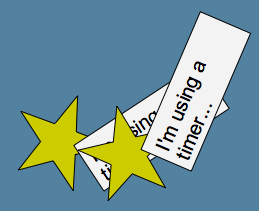

Lively Kernel Tutorial: (15) Scripting Objects with Timers
All the objects in Lively Kernel can be scripted using timers.
Timers are JavaScript functions that are invoked periodically for the given objects.
For instance, in the example below we are using timers to rotate a number of
stars that have been defined as PolygonShape objects.
We have also created a clock that moves and rotates itself as it ticks.
See the source code of this demo for details.

Notes:
All the usual object editing capabilities can be applied to timed objects.
For instance, you can edit the text in the labels below, or reshape the polygons on the fly.
Try it yourself! Take a look at the source code
of this demo to see how to create scripted objects. While looking at the demo
in action, try editing the text labels as well as grabbing the handles
of the stars while the stars are rotating.